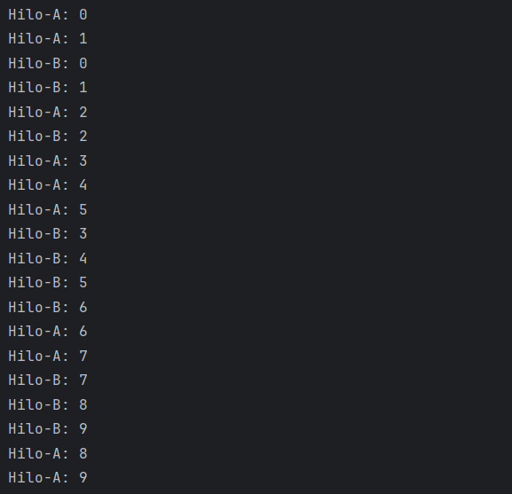
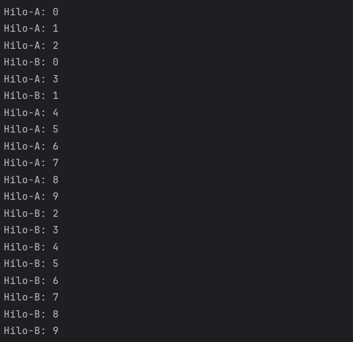
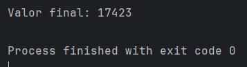
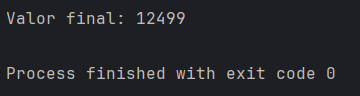
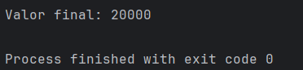
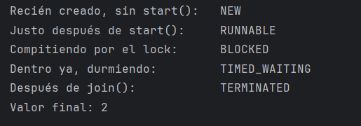

🧩 1. Hilos en una aplicación real: dónde ya los estás usando¶
Este apartado es distinto a todos los anteriores: no vas a escribir código de producción — vas a aprender a ver algo que ya está pasando delante de ti sin que lo hayas notado. Ahora mismo, mientras tu aplicación Spring Boot atiende peticiones, hay varias tareas ejecutándose "a la vez" dentro de ella, sin que tú hayas escrito una sola línea de código pidiéndolo. El mecanismo detrás de eso tiene nombre — el hilo — y es el protagonista de todo este tema. Empecemos por ahí.
🧵 Proceso vs. hilo¶
Un proceso es un programa en ejecución con su propia memoria, aislada de la de otros procesos — cuando arrancas tu aplicación Spring Boot, la JVM entera es un proceso (puedes comprobarlo en el administrador de tareas de tu sistema: verás un proceso java).
Un hilo (thread) es una línea de ejecución dentro de ese proceso — un proceso puede tener varios hilos, y todos ellos comparten la misma memoria del proceso al que pertenecen. Piensa en el proceso como un taller cerrado, con sus propias herramientas y materiales que nadie de fuera puede tocar; los hilos son los operarios que trabajan dentro de ese taller. Puede haber uno o varios, y todos usan las mismas herramientas — muy cómodo para colaborar, pero, como vas a ver enseguida, también peligroso si dos operarios cogen la misma herramienta a la vez.
flowchart TB
subgraph P["🖥️ Proceso (la JVM)"]
M["Memoria compartida"]
H1["Hilo 1"] --- M
H2["Hilo 2"] --- M
H3["Hilo 3"] --- M
end🏃 Concurrencia vs. paralelismo¶
Retoma el taller de antes: un único operario puede llevar varias tareas a la vez turnándose entre ellas — aprieta un tornillo aquí, va a vigilar el horno, vuelve a la pieza anterior — sin terminar ninguna del todo antes de pasar a la siguiente, pero dando la sensación de que todas avanzan a un tiempo. Eso es exactamente lo que hace un procesador con un solo núcleo: reparte su atención entre varios hilos en fracciones de segundo tan pequeñas que parece que van a la vez, aunque en realidad solo hay uno trabajando en cada instante concreto. Si en cambio el taller tiene varios operarios, cada uno con su propia tarea, ahí sí hay trabajo sucediendo de verdad al mismo tiempo — y eso necesita varios núcleos de procesador, uno por cada hilo que avanza en paralelo. Esa es la diferencia entre los dos términos:
- Concurrencia: varios hilos se turnan para avanzar, aunque haya un solo núcleo de procesador disponible — el planificador del sistema operativo reparte pequeñas porciones de tiempo entre ellos, tan rápido que parece simultáneo.
- Paralelismo: varios hilos ejecutan de verdad al mismo tiempo, en núcleos de procesador distintos.
En ambos casos, el planificador del sistema operativo decide cuándo se ejecuta cada hilo — tu programa no controla ese detalle.
🚀 Crear hilos en Java¶
Java separa dos ideas que hasta ahora iban juntas: qué trabajo hay que hacer y quién lo va a ejecutar. Runnable describe el trabajo — es la orden de trabajo que le dejarías a un operario, con las instrucciones de qué hacer, pero todavía sin decir quién la ejecuta ni cuándo. Thread es el operario de verdad: al crearlo le entregas esa orden de trabajo (el Runnable) y, en cuanto le dices que empiece, la ejecuta por su cuenta, en paralelo con lo que esté haciendo el resto del taller.
La forma más directa de repartir una tarea entre varios hilos: implementar Runnable con el trabajo a hacer, y envolverlo en tantos Thread como operarios quieras poner a trabajar a la vez:
| Java | |
|---|---|
start(), no run()
Si llamas directamente a tarea.run(), ejecutas ese código en el hilo actual, como una llamada a método normal — no se crea ningún hilo nuevo. start() es lo que de verdad arranca un hilo nuevo del sistema operativo, que ejecutará el run() de forma independiente.
Ejecuta este código dos veces seguidas: la salida por consola no será idéntica las dos veces. Si tu ordenador tiene varios núcleos —la mayoría los tiene hoy—, lo más probable es que Hilo-A e Hilo-B no se estén turnando en un único núcleo, sino ejecutando de verdad al mismo tiempo, cada uno en el suyo: este ejemplo, en tu máquina, casi seguro demuestra paralelismo, no la concurrencia de turnos que acabas de ver. Lo que sigue siendo no determinista es el orden exacto en que sus líneas llegan a la consola: aunque los dos hilos avancen en paralelo, no hay ninguna garantía de que vayan al mismo ritmo, así que qué línea imprime cada uno en cada instante depende de decisiones del sistema operativo que escapan a tu control — y por eso la salida cambia de una ejecución a otra. Así se ven dos ejecuciones reales del mismo código, una al lado de la otra:


En la primera, Hilo-A e Hilo-B avanzan a un ritmo muy parecido, así que sus líneas se entrelazan casi una a una; en la segunda, Hilo-A ha ido más rápido y ha completado casi todo su trabajo antes de que las líneas de Hilo-B empiecen a aparecer. Ninguna de las dos es "la correcta" — las dos son resultados válidos del mismo programa corriendo en paralelo, y por eso no puedes dar por hecho en qué orden van a imprimir sus líneas dos hilos que se ejecutan a la vez.
⚠️ El problema central: compartir memoria¶
Como los hilos de un mismo proceso comparten memoria, dos hilos pueden intentar modificar el mismo dato a la vez — y ahí aparece la condición de carrera: el resultado final del programa pasa a depender de en qué orden exacto llegan los hilos a leer y escribir ese dato compartido, un orden que, como ya has visto, es impredecible. Se llama "carrera" porque es literalmente eso — varios hilos compitiendo por el mismo dato — y el resultado cambia según quién "gane" esa carrera en cada ejecución concreta, sin que tú puedas controlarlo ni predecirlo de antemano.
El ejemplo clásico: dos hilos incrementando un contador compartido 10.000 veces cada uno. Cópialo y ejecútalo tú mismo:
t1.join()/t2.join() hace que el hilo principal —el que ha creado y arrancado t1 y t2— se quede esperando a que cada uno termine su trabajo antes de seguir. Sin esas dos líneas, main podría llegar al System.out.println("Valor final: ...") mientras t1 y t2 todavía están incrementando el contador por su cuenta, y el número que verías no sería el resultado final de verdad, sino una foto a medio terminar.
Dos ejecuciones reales de este mismo código, en la misma máquina, una detrás de otra:


Ni siquiera coinciden entre sí, y ninguna de las dos llega a 20.000 — la prueba de que el problema no es solo teórico. Si lanzas dos hilos que llaman a incrementar() 10.000 veces cada uno, el resultado final no da 20.000 — casi siempre da menos, y un poco distinto cada vez. ¿Por qué? valor++ no es una sola operación atómica: son tres pasos (leer el valor actual, sumarle uno, escribir el resultado), y esos tres pasos de un hilo se pueden intercalar con los de otro.
Así se pierde un incremento en la práctica — imagina que los dos hilos llegan casi a la vez, cuando valor todavía vale 0:
| Paso | Hilo A | Hilo B | valor |
|---|---|---|---|
| 1 | lee valor → 0 |
0 | |
| 2 | lee valor → 0 |
0 | |
| 3 | calcula 0 + 1 |
0 | |
| 4 | calcula 0 + 1 |
0 | |
| 5 | escribe valor = 1 |
1 | |
| 6 | escribe valor = 1 |
1 |
Dos llamadas a incrementar() deberían haber dejado valor en 2, pero como ambos hilos han leído el mismo valor antes de que ninguno escribiera, el resultado final es 1 — se ha perdido un incremento entero. Multiplica este mismo entrelazado por miles de llamadas y por eso el resultado final casi nunca es exactamente 20.000.
La solución básica es synchronized: marca una sección crítica (un bloque de código) que solo un hilo puede ejecutar a la vez — cualquier otro hilo que quiera entrar debe esperar a que el primero salga. Ese "esperar" tiene nombre propio: el hilo que llega tarde queda bloqueado por un lock, el candado que el primer hilo mantiene ocupado mientras está dentro de la sección crítica. Es como el baño de una cafetería con una única llave colgada en el mostrador: mientras un cliente la tiene y está dentro, cualquier otro que quiera entrar se queda esperando fuera, por mucha prisa que tenga — nadie entra hasta que la llave vuelve a estar libre.
| Java | |
|---|---|
Cambia el incrementar() de tu Contador por esta versión y vuelve a ejecutar ContadorDemo — ahora ningún hilo puede leer, sumar y escribir mientras otro está a mitad de esos mismos tres pasos, así que el resultado deja de depender de qué orden gane la carrera:

20000, exacto, cada vez que lo ejecutes — el synchronized no ha hecho que los hilos vayan más rápido (de hecho van más lentos, porque se turnan en vez de solaparse), pero sí ha hecho que el resultado sea siempre correcto.
El peligro opuesto: deadlock
Si te pasas de precavido bloqueando en exceso, puedes acabar con un deadlock: dos hilos esperando cada uno un recurso que tiene bloqueado el otro, sin que ninguno pueda avanzar nunca. synchronized resuelve la condición de carrera, pero mal usado crea un problema distinto.
🔄 El ciclo de vida de un hilo¶
Un hilo no está siempre "ejecutando" sin más — pasa por varios estados bien definidos entre que lo creas y que termina, y Java te deja consultar en cuál está en cada momento (Thread.getState()). Este es el mapa completo:
stateDiagram-v2
[*] --> NEW
NEW --> RUNNABLE: start()
RUNNABLE --> BLOCKED: lock ocupado por otro hilo
BLOCKED --> RUNNABLE: lock liberado
RUNNABLE --> WAITING: sleep() / join() / wait()
WAITING --> RUNNABLE: termina la pausa
RUNNABLE --> TERMINATED: termina run()
TERMINATED --> [*]La tabla resume qué hace que un hilo entre en cada estado, y qué significa realmente estar ahí — la distinción importante es que BLOCKED es una espera forzada (no decides tú cuándo se acaba), mientras que WAITING/TIMED_WAITING es una pausa que el propio hilo elige tomar:
| Estado | ¿Cómo se llega? | ¿Qué significa? |
|---|---|---|
NEW |
Acabas de crearlo con new Thread(...) |
Existe el objeto, pero todavía no has llamado a start() |
RUNNABLE |
Llamas a start() — no a run() |
Está ejecutando el código de tu run(), o listo para hacerlo en cuanto el planificador le dé turno |
BLOCKED |
Intenta entrar en una sección synchronized que otro hilo ya ocupa |
Espera forzada — como el cliente haciendo cola frente al baño ocupado, sin poder decidir cuándo va a entrar |
WAITING / TIMED_WAITING |
El propio hilo llama a sleep(), join() o wait() |
Pausa voluntaria — el hilo decide pararse un rato por su cuenta, nadie se lo impone |
TERMINATED |
Su run() acaba |
Fin — ya no vuelve a ejecutarse nunca |
Ojo con no confundir start() y run() aquí tampoco: es start() quien mueve el hilo de NEW a RUNNABLE, no run(). run() es solo el método con el código que ese hilo va a ejecutar mientras está en RUNNABLE — si llamas a tarea.run() directamente (como avisaba el primer recuadro de este apartado), no creas ningún hilo nuevo, así que no hay ningún estado que cambiar: ese código se ejecuta como una llamada normal dentro del hilo que ya tenías.
Nada de esto se queda en la teoría: puedes preguntarle a un hilo en qué estado está en cualquier momento con getState(). Retomando el Contador de antes —ahora con incrementar() ya synchronized, y con una pausa añadida solo para que te dé tiempo a observar cada estado con calma—, dos hilos ejecutando exactamente la misma tarea son suficientes para forzar, uno detrás de otro, los cinco estados del diagrama: mientras uno ya está dentro incrementando y durmiendo, el otro se queda esperando el mismo lock.
Ejecútalo tú mismo — esta es la salida real, los cinco estados en el mismo orden del diagrama, uno detrás de otro:

Hilo-1 pasa literalmente por los cinco: nace en NEW, se vuelve RUNNABLE en cuanto llamas a start(), cae en BLOCKED mientras Hilo-2 todavía tiene el lock ocupado, entra en TIMED_WAITING en cuanto por fin consigue el lock y llama a su propio sleep(), y acaba en TERMINATED cuando su run() termina — y el Valor final: 2 confirma que, aun con dos hilos compitiendo por el mismo dato, synchronized ha dejado el resultado correcto.
🪜 La escala de abstracción¶
Crear hilos con Thread/Runnable a mano funciona, pero no escala: crear un hilo nuevo por cada tarea, sin límite, puede agotar los recursos del sistema. Es como contratar a un operario nuevo para cada tarea que aparece, por pequeña que sea, y despedirlo en cuanto termina — funciona, pero es un despilfarro si las tareas no dejan de llegar. La siguiente capa de abstracción es un ExecutorService: un pool de hilos reutilizables, más parecido a tener una plantilla fija de operarios ya contratados, que van cogiendo la siguiente tarea de una lista en cuanto terminan la anterior, en vez de crear un hilo nuevo cada vez. Así se ve la diferencia entre los dos enfoques:
flowchart TB
subgraph M["🔨 Un Thread nuevo por tarea"]
direction TB
T1["Tarea 1"] --> H1["🧍 Operario nuevo"] --> X1["🗑️ despedido"]
T2["Tarea 2"] --> H2["🧍 Operario nuevo"] --> X2["🗑️ despedido"]
T3["Tarea 3"] --> H3["🧍 Operario nuevo"] --> X3["🗑️ despedido"]
end
subgraph E["🏭 ExecutorService: plantilla fija"]
direction TB
Q["📋 Cola de tareas"]
P1["🧍 Operario 1"]
P2["🧍 Operario 2"]
Q --> P1
Q --> P2
P1 -.->|"vuelve a por la siguiente"| Q
P2 -.->|"vuelve a por la siguiente"| Q
endEn "Un Thread nuevo por tarea", cada tarea contrata y despide a su propio operario, por pequeña que sea la tarea. En "ExecutorService: plantilla fija", una plantilla fija de dos operarios se reparte todas las tareas que vayan llegando a la cola, sin contratar ni despedir a nadie de más.
El ExecutorService ya resuelve el despilfarro de crear un hilo por tarea, pero sigue siendo trabajo tuyo: crear el pool, elegir su tamaño, y enviarle cada tarea explícitamente. Spring da un paso más y se encarga hasta de eso: por encima de ExecutorService están las abstracciones que vas a usar en los próximos apartados de este tema — tú ni siquiera gestionas la plantilla, solo escribes una nota en tu propio código (una anotación) y el framework se encarga de todo lo demás, sin que tengas que gestionar el Thread/Runnable/ExecutorService explícitamente. Los tres niveles, resumidos:
| Nivel | Qué haces tú | Quién gestiona los hilos |
|---|---|---|
Thread/Runnable a mano |
Creas y arrancas cada hilo tú mismo | Nadie — un hilo nuevo por cada new Thread() |
ExecutorService |
Envías tareas a un pool ya creado | El propio ExecutorService, reutilizando hilos |
| Abstracciones de Spring (próximos apartados) | Declaras una anotación en tu propio código | Spring, por debajo, con un ExecutorService propio |
🔍 Tu aplicación ya es multihilo¶
Siguiendo con la API de la librería que conoces de los temas anteriores, hay al menos un sitio donde ya hay varios hilos trabajando sin que tú lo hayas pedido — y vas a construir tú mismo un segundo sitio en la próxima actividad, siguiendo exactamente el mismo patrón.
El pool de Tomcat¶
Ya lo comprobaste experimentalmente en el Tema 1: dos peticiones simultáneas al endpoint lento (con su Thread.sleep(2000) simulado) no tardaban el doble, sino aproximadamente lo mismo que una sola. Ahora tienes el nombre técnico: Tomcat mantiene un pool de hilos, y cada petición HTTP se atiende en un hilo distinto de ese pool — este es el sitio donde ya lo tienes, sin haberlo pedido.
La próxima pieza — un listener que atiende mensajes¶
El pool de Tomcat funciona porque hay hilos dedicados a atender algo que llega desde fuera: entra una petición HTTP, y un hilo libre del pool se encarga de ella. Lo que vas a construir en la Actividad 3.1 sigue exactamente el mismo patrón, pero atendiendo otra cosa: en vez de peticiones HTTP, atiende mensajes. Todavía no lo tienes en tu proyecto — lo vas a montar tú mismo dentro de un momento, pero antes de ver el mecanismo, vale la pena entender qué problema resuelve y por qué merece la pena.
El problema, antes que la solución¶
Imagina que quieres que, cada vez que se crea, modifica o borra un Libro, quede un registro de esa actividad (qué ha pasado y cuándo) — algo útil para auditoría, pero que a quien hace el POST no le importa lo más mínimo. ActividadService es la pieza que ya sabe hacer eso: simplemente guarda ese registro en base de datos (una entidad más, con su propio repositorio), para poder consultarlo más adelante. La forma más directa de usarla: llamarla tú mismo, dentro de LibroService.create(), en el mismo hilo que atiende la petición:
| Java | |
|---|---|
Funciona, pero acopla dos cosas que no tienen por qué ir juntas: el cliente que ha hecho el POST tiene que esperar a que termine también el registro de actividad antes de recibir su respuesta, aunque ese registro no forme parte de lo que realmente le importa. Si registrar() tardara, o si esa pieza fallara, se llevaría por delante la creación del libro entera — un problema secundario contaminando al principal.
La idea que soluciona esto: que el hilo A (el de la petición) haga solo lo esencial —guardar el libro— y anuncie que eso ha pasado, sin esperar a que nadie reaccione. Otro hilo, en su propio momento, se encarga de la parte no esencial.
Por qué un broker, y no simplemente otro hilo¶
Podrías pensar: ¿por qué no arrancar directamente un new Thread() para eso, sin meter nada más de por medio? Porque un hilo suelto no sobrevive a nada: si la aplicación se reinicia justo después de arrancarlo, ese registro se pierde para siempre, sin dejar rastro. Un broker de mensajería guarda el mensaje hasta que alguien lo consuma de verdad — y ese "alguien" ni siquiera tiene que existir todavía en el momento de publicar: el mensaje se queda esperando.
Antes de verlo en acción necesitas saber qué es RabbitMQ, porque es la primera vez que aparece en el curso. RabbitMQ es exactamente ese broker de mensajería: un servidor intermediario que recibe mensajes de quien los produce y los entrega a quien los consume, sin que productor y consumidor se conozcan entre sí ni tengan que estar activos al mismo tiempo. Funciona como una oficina de correos: echas una carta en un buzón sin saber quién la va a recoger ni cuándo, y la oficina se encarga de llevarla hasta el destinatario correcto.
flowchart LR
P["📤 Productor<br/>echa la carta"] --> B["📮 RabbitMQ<br/>la oficina de correos"]
B --> C["📥 Consumidor<br/>la recoge, sin prisa"]Por dentro, esa "oficina de correos" tiene sus propias piezas, y cada una tiene su nombre. Los mensajes esperan en una cola — una lista de mensajes pendientes de procesar, como la bandeja de cartas sin repartir. Antes de llegar ahí, pasan por un exchange: el equivalente al clasificador de la oficina, que mira la "dirección" de cada mensaje (su routing key) y decide a qué cola (o colas) lo manda, según reglas de enrutado que tú mismo configuras. Y del lado de quien recibe está el listener: un trozo de código que se queda a la espera de que ocurra algo —en este caso, que llegue un mensaje a su cola— y reacciona cuando pasa, sin controlar él cuándo va a ocurrir ni tener que estar comprobándolo activamente. En Spring, @RabbitListener marca un método como ese tipo de código: Spring lo invoca automáticamente en cuanto llega un mensaje a la cola indicada, en un hilo aparte, reservado por Spring para esto — no en el hilo de quien publicó el mensaje.
flowchart LR
P["📤 Productor<br/>publica un mensaje"] --> X["🔀 Exchange<br/>mira la dirección"]
X --> Q["📋 Cola<br/>mensajes pendientes"]
Q --> C["📥 @RabbitListener<br/>consumidor, otro hilo"]La solución completa, con las dos mitades del flujo¶
Antes de nada, una pieza que suele generar dudas: el que publica solo conoce el exchange (CATALOGO_EXCHANGE); el que escucha solo conoce la cola (ACTIVIDAD_LIBRO_QUEUE) — ninguno de los dos menciona al otro directamente. Lo que conecta ambos nombres es un binding: una regla, independiente de publicador y consumidor, que asocia un exchange con una cola bajo un patrón de routing key concreto — es literalmente la ficha del clasificador de la oficina de correos ("todo lo que traiga esta dirección, a este casillero"), y es donde de verdad se decide el destino final de un mensaje.
Con esta Binding, cualquier mensaje publicado en CATALOGO_EXCHANGE con una routing key que empiece por "libro." ("libro.creado", "libro.actualizado"...) termina en ACTIVIDAD_LIBRO_QUEUE — es el exchange, no el publicador, quien decide el destino final, exactamente como el clasificador de la oficina de correos de antes.
Lo primero que sí toca al código de negocio es el propio mensaje: un record sencillo con lo mínimo que el otro lado va a necesitar saber — qué ha pasado, y sobre qué libro:
| Java | |
|---|---|
Publicar es tan simple como llamar a RabbitTemplate, la clase que Spring te da para hablar con el exchange: le dices en qué exchange quieres publicar, con qué routing key y qué mensaje mandar (este LibroEvent). Esta es la pieza que sustituye a la llamada directa de antes, dentro de LibroService.create():
LibroService.create() ahora llama a publicar(...) en vez de a actividadService.registrar(...) directamente — y ahí termina su trabajo: no espera respuesta de nadie, simplemente entrega el mensaje al exchange y responde al cliente:
El registro de verdad ocurre del otro lado, reaccionando cuando ese mensaje llega a su cola:
El flujo completo, con dos hilos distintos involucrados:
flowchart LR
A["🌐 Petición HTTP<br/>(hilo A, pool Tomcat)"] --> B["LibroService.create()"]
B --> C["LibroEventPublisher<br/>publica en RabbitMQ"]
C -.-> D["ActividadLibroEventConsumer<br/>@RabbitListener (hilo B, otro hilo)"]LibroService.create() (hilo A, el de la petición HTTP) publica el evento y no espera a que se procese — sigue su camino y responde al cliente. El consumer lo recoge y lo procesa en su propio hilo (hilo B), en su propio momento. Ese es exactamente el problema del principio, resuelto: la petición HTTP ya no se queda esperando a que se registre la actividad, y encima el mensaje sobrevive aunque en ese instante no hubiera ningún consumidor escuchando.
✅ Ideas clave¶
Abrir resumen
- Un proceso tiene su propia memoria; un hilo es una línea de ejecución dentro de un proceso, compartiendo su memoria con los demás hilos de ese proceso.
- Concurrencia (turnarse) vs. paralelismo (a la vez, en núcleos distintos) — el planificador del SO decide, no tu programa.
new Thread(runnable).start()arranca un hilo real; llamar arun()directamente NO crea ningún hilo nuevo.- La condición de carrera ocurre cuando varios hilos modifican el mismo dato sin coordinación;
synchronizedla resuelve creando una sección crítica protegida por un lock — pero en exceso puede provocar deadlock. - Ciclo de vida: NEW → RUNNABLE → BLOCKED (esperando un lock) / WAITING → TERMINATED.
- RabbitMQ: un broker de mensajería con colas y exchanges;
@RabbitListenerprocesa mensajes en un hilo aparte, distinto del hilo que publicó. Publicador y consumidor no se conocen entre sí — es el binding (exchange + patrón de routing key → cola) quien conecta a uno con el otro. - Publicar un mensaje y dejar que otro hilo lo procese evita que el trabajo no esencial (como registrar actividad) retrase la respuesta al cliente — y un broker, a diferencia de un
new Thread()suelto, conserva el mensaje aunque en ese momento no haya nadie escuchando. - Tu aplicación ya es multihilo: el pool de Tomcat (una petición, un hilo) ya lo tienes, sin haberlo pedido ni escrito
new Thread()nunca. El listener de RabbitMQ sigue el mismo patrón, pero es la pieza que vas a construir tú mismo en la próxima actividad.